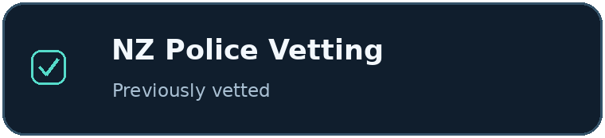
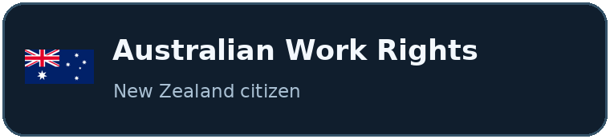

Executive Documentation
CURRICULUM VITAE
Download ATS-optimized executive resume or preview credentials, clearance verifications, and delivery achievements.
OFFICIAL PDF CV
Executive Master CV
Formatted for hiring managers and recruiters. Complete career history, quantifiable delivery metrics, clearances, and certifications.
Download Master PDF Download Word Document (.docx)
LINKEDIN VERIFICATION
LinkedIn Profile
Explore verified professional network, peer recommendations, skill badges, and real-time leadership activities.
View LinkedIn Profile
CLEARANCE & VETTING
Security Credentials
New Zealand Citizen & Vetting Eligibility (Confidential / NZ Government Vetting), NZ Police Vetting, NZ Citizen, Australian Permanent Resident Visa.
View Credential Cards
Official Work Rights & Security Clearances
Unrestricted Trans-Tasman Eligibility
NZ Security Clearance

NZ Police Vetting
Previously NZ Police vetted

New Zealand Citizen
Wellington Resident

Australian Permanent Resident Visa
Subclass 444 (SCV)
PDF Document Preview
Open in New Tab ↗